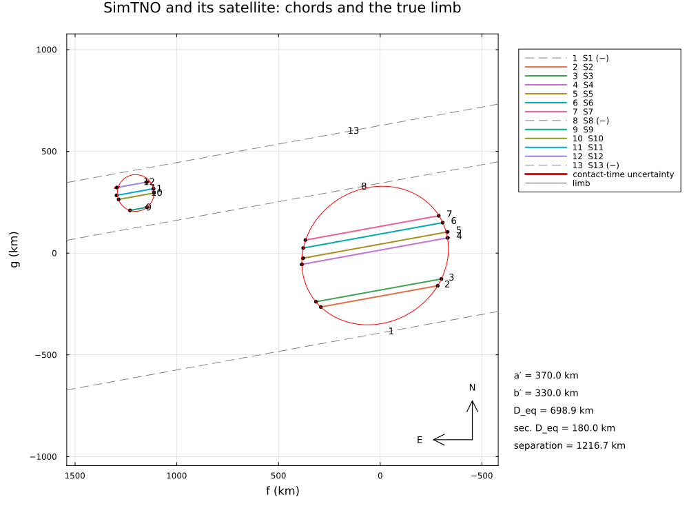
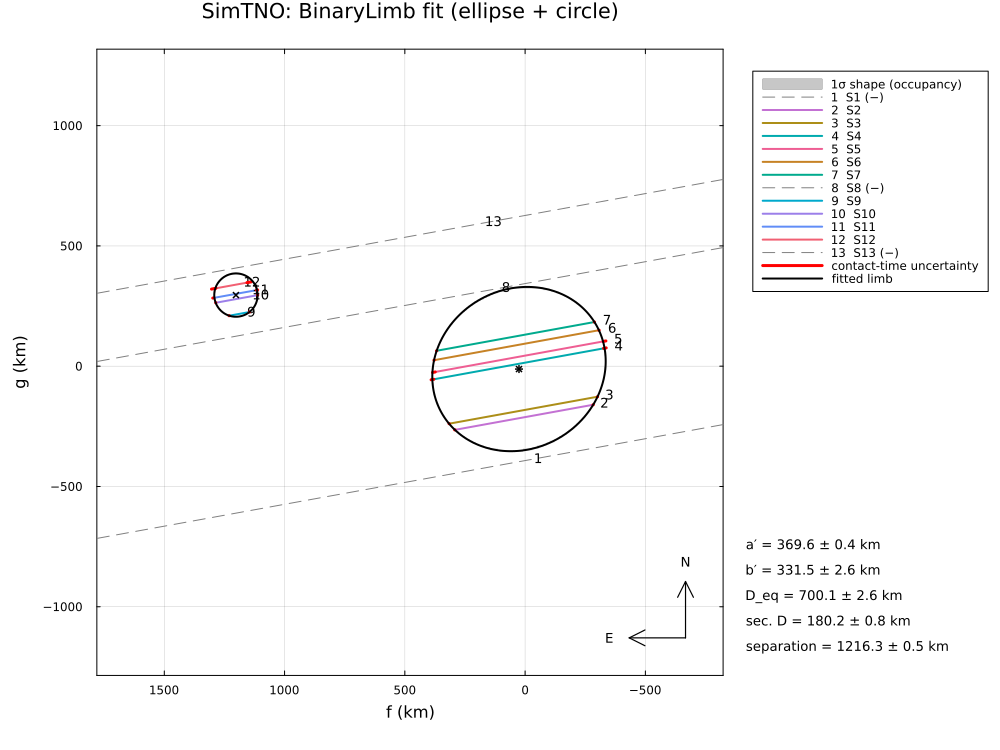
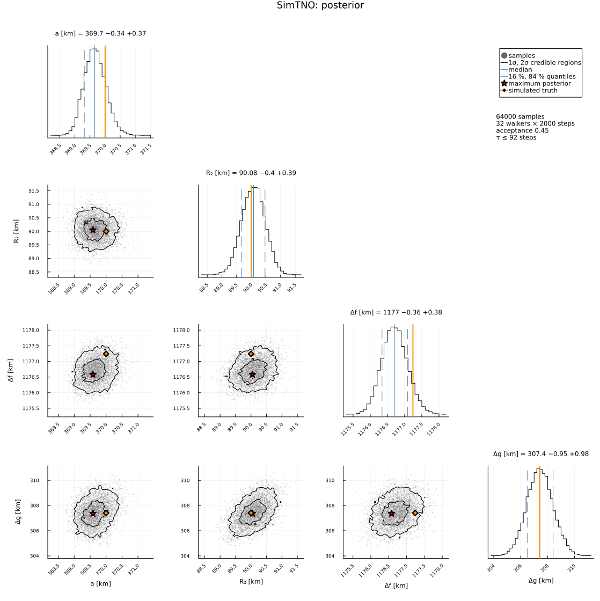
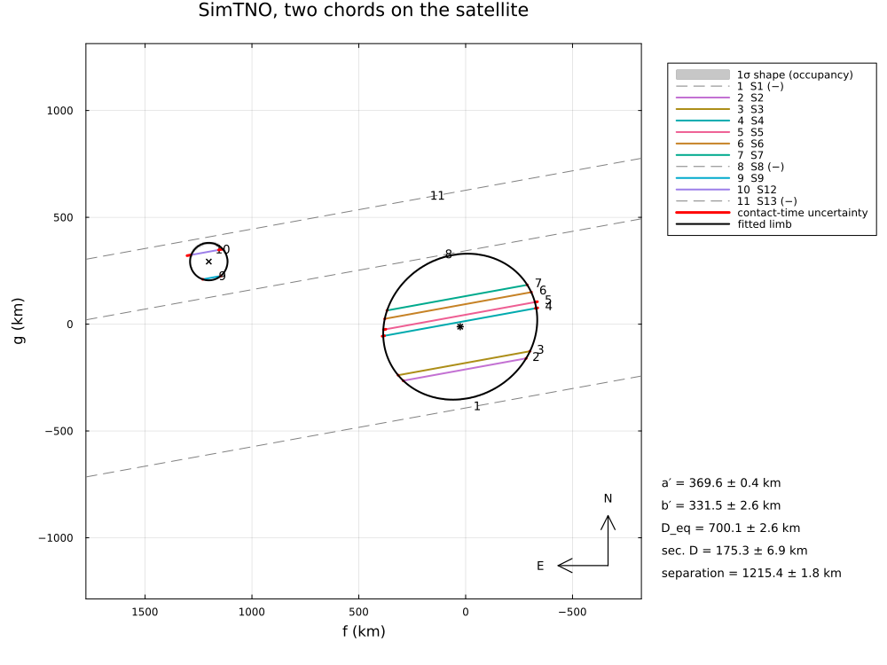
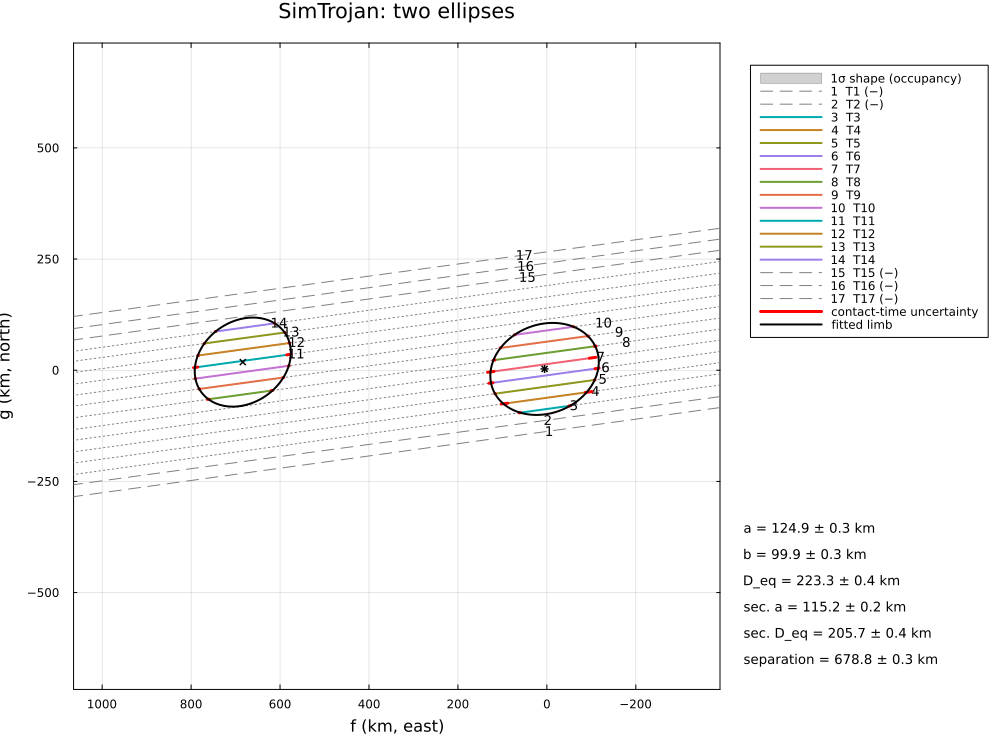

Synthetic: a satellite and a binary system
Simulated occultations by two-body systems, reduced with BinaryLimb. The truth is known and printed next to the fitted values:
- a trans-Neptunian object (740 × 660 km) with a satellite (radius 90 km) at 1216 km: thirteen stations, four of them on the satellite. The satellite is fitted as a circle (the default) and as an ellipse; the astrometry of the primary, the barycentre and the photocentre; the posterior;
- the same with only two chords on the satellite: its radius from two chords and the visible segments of the chords, and why an ellipse cannot be fitted then;
- a binary of two similar bodies (Patroclus–Menoetius-like, two ~110 km bodies 680 km apart, a Jupiter Trojan): several chords cross both bodies (two drops); an ellipse for each body;
- coverage: the 1σ intervals of the satellite's radius and position over 100 simulations with different noise.
The stations are placed on land and in the dark, spread along the track, each with its own equipment and timing accuracy (0.02–0.4 s; examples/sim_stations.jl). The contacts are simulated with Gaussian timing errors (the timing of light curves is shown in the contact-binary example). Run it with:
julia --project=. examples/sim_binary.jl [output_dir] (default: examples/output/sim_binary)The code is not run when the manual is built. The output after each section is that of the last run of examples/sim_binary.jl, stored in examples/output/sim_binary/output.txt.
using Occultations, Random, Printf, Statistics
using Plots
import CairoMakie # saves the GeoMakie maps (Makie figures)
include(joinpath(@__DIR__, "standard_figures.jl"))
out = length(ARGS) >= 1 ? ARGS[1] : mkpath(joinpath(@__DIR__, "output", "sim_binary"))
rng = MersenneTwister(7)1. a TNO with a satellite
eph = EphemKeplerian(a=43.0, e=0.05, i=12.0, Ω=80.0, ω=150.0, M=10.0, epoch=Epoch("2023-01-01"), name="SimTNO")
body = Body("SimTNO", eph; radius=350.0)
t0 = Epoch("2023-05-01T03:00:00")
ra, dec, _ = ephem_radec(body, t0)
star = Star(ra + 0.002 / 3600 / cosd(dec), dec; name="SimStar", ra_err=0.15, dec_err=0.12)
# the direction of motion of the shadow and the cross-track direction (to its left)
p = positionv(star, eph, GEOCENTER, Event(star, body, t0).tref)
along = (p.vf, p.vg) ./ hypot(p.vf, p.vg)
across = (-along[2], along[1])The true system: the primary, an ellipse of 370 × 330 km (position angle of the minor axis 30°), and the satellite, a circle of 90 km, 1100 km ahead along the track and 520 km to its left; the system is 25 km east and 12 km south of the ephemeris position.
center = (25.0, -12.0)
sep = 1100.0 .* along .+ 520.0 .* across
truth = CompositeOutline([EllipseOutline(370.0, 330.0, 30.0), EllipseOutline(90.0, 90.0, 0.0)],
[(0.0, 0.0), sep])
@printf("true separation %.1f km at PA %.1f° (Δf, Δg = %.1f, %.1f km)\n", hypot(sep...), mod(atand(sep...), 360), sep...)
# The stations (examples/sim_stations.jl): on land and in the dark, spread along the track, each
# with its own equipment and timing accuracy; their chords cross the shadow at the cross-track
# `offsets` [km] from the centre of the primary
include(joinpath(@__DIR__, "sim_stations.jl"))
function simulate(star, body, t0, truth, center, offsets; rng, prefix="S", sites=nothing, name="SimTNO")
ev = Event(star, body, t0; name=name) # simulated: no date in the plots
pv = positionv(star, body.ephem, GEOCENTER, ev.tref)
n = (-pv.vg, pv.vf) ./ hypot(pv.vf, pv.vg)
sites = something(sites, stations(star, body, ev.tref, offsets .+ (center[1] * n[1] + center[2] * n[2]);
rng=rng, prefix=prefix))
for st in sites
o, σ = st.observer, st.equipment[2]
span = (ev.tref + st.τ - 150, ev.tref + st.τ + 150)
pc = predicted_contacts(ev, o, truth; center=center, window=abs(st.τ) + 300, step=0.05)
cs = reduce(vcat, [[Contact(:immersion, a + σ * randn(rng), σ), Contact(:emersion, b + σ * randn(rng), σ)]
for (a, b) in pc]; init=Contact[])
push!(ev, isempty(cs) ? Chord(o.name, o; span=span) : Chord(o.name, o; contacts=cs, span=span))
end
return ev, sites
end
function station_table(sites)
for st in sites
@printf(" %-4s lon %8.3f° lat %7.3f° %+6.1f s from the closest approach %-22s σ = %.2f s\n",
st.observer.name, st.observer.lon, st.observer.lat, st.τ, st.equipment[1], st.equipment[2])
end
end
# random offsets: eight across the primary, five across the region of the satellite
offsets = [random_offsets(MersenneTwister(3), 8, -420.0, 400.0; mingap=20.0);
random_offsets(MersenneTwister(4), 5, 420.0, 660.0; mingap=15.0)]
ev, sites = simulate(star, body, t0, truth, center, offsets; rng=rng)
station_table(sites)
display(ev)
savefig(plot(ev; limb=truth, center=center, title="SimTNO and its satellite: chords and the true limb", size=(1000, 750)),
joinpath(out, "binary_chords.png"))The default model: an ellipse for the primary, a circle for the satellite. The contacts carry no labels: each is matched to the nearest crossing of the same kind of either body, and the starting values come from the contacts split into two groups. The visible segments of the chords (the star seen before and after each drop) are constraints by default.
r1 = fit_limb(ev; model=BinaryLimb(), rng=rng)
display(r1)
row(n, tv) = @printf(" %-22s %9.2f ± %6.2f (truth %8.2f)\n", n, r1[n]..., tv)
println("fitted vs true:")
row(:equatorial_radius, 370.0); row(:semi_minor_axis, 330.0); row(:position_angle, 30.0); row(:sec_radius, 90.0)
row(:sep_f, sep[1]); row(:sep_g, sep[2]); row(:center_f, center[1]); row(:center_g, center[2])The satellite as an ellipse: four chords give eight contacts for five parameters of the satellite. The ellipse is not needed (the satellite is a circle): its χ² is barely lower, and the Bayesian information criterion (χ² + k ln n) prefers the circle.
r2 = fit_limb(ev; model=BinaryLimb(EllipseLimb(), EllipseLimb()), rng=rng)
bic(r) = r.chi2 + length(freenames(r)) * log(Occultations.nobs(r.problem))
@printf("satellite as a circle: χ² = %6.2f, %2d parameters, BIC = %6.2f\n", r1.chi2, length(freenames(r1)), bic(r1))
@printf("satellite as an ellipse: χ² = %6.2f, %2d parameters, BIC = %6.2f a = %.1f ± %.1f km, ε = %.3f ± %.3f\n",
r2.chi2, length(freenames(r2)), bic(r2), r2[:sec_equatorial_radius]..., r2[:sec_oblateness]...)Astrometry: the fitted centre is that of the primary. The barycentre (equal densities: mass ratio = size ratio³) and the photocentre (equal albedos: area ratio) lie towards the satellite; for an orbit fit of the system, the barycentre is the reference.
for ref in (:center, :barycenter, :photocenter)
a = astrometry(r1; reference=ref)
@printf(" %-12s RA %s Dec %s offset (%+.3f, %+.3f) mas ± (%.3f, %.3f)\n", ref, a.ra_str, a.dec_str,
a.offset_ra, a.offset_dec, a.ra_err, a.dec_err)
end
@printf("separation %.1f ± %.1f km = %.2f ± %.2f mas at PA %.2f ± %.2f°, size ratio %.3f ± %.3f\n", r1[:separation]...,
r1[:separation_mas]..., r1[:separation_pa]..., r1[:size_ratio]...)Posterior:
post = sample(r1; nsteps=3000, rng=rng)
display(post)
savefig(cornerplot(post; vars=[:equatorial_radius, :sec_radius, :sep_f, :sep_g],
axislabels=Dict(:equatorial_radius => "a [km]", :sec_radius => "R₂ [km]", :sep_f => "Δf [km]",
:sep_g => "Δg [km]"),
truths=Dict(:equatorial_radius => 370.0, :sec_radius => 90.0, :sep_f => sep[1], :sep_g => sep[2]),
truth_label="simulated truth"), joinpath(out, "binary_corner.png"))
savefig(plot(r1; title="SimTNO: BinaryLimb fit (ellipse + circle)", size=(1000, 750)), joinpath(out, "binary_fit.png"))true separation 1216.7 km at PA 75.4° (Δf, Δg = 1177.2, 307.4 km)
S1 lon -59.770° lat -11.076° +166.1 s from the closest approach video, GPS-timed σ = 0.02 s
S2 lon -64.374° lat -7.846° +186.6 s from the closest approach CMOS camera, GPS σ = 0.03 s
S3 lon -60.831° lat -8.751° +173.1 s from the closest approach video, GPS-timed σ = 0.02 s
S4 lon -53.416° lat -9.294° +144.5 s from the closest approach CCD, long cycle σ = 0.25 s
S5 lon -57.761° lat -7.643° +163.2 s from the closest approach CCD, long cycle σ = 0.25 s
S6 lon -58.764° lat -6.851° +167.9 s from the closest approach CMOS camera, GPS σ = 0.03 s
S7 lon -51.164° lat -8.901° +136.0 s from the closest approach CMOS camera, GPS σ = 0.03 s
S8 lon -54.195° lat -5.984° +151.5 s from the closest approach CCD, long cycle σ = 0.25 s
S9 lon -54.943° lat -4.904° +155.6 s from the closest approach CMOS camera, GPS σ = 0.03 s
S10 lon -54.149° lat -4.557° +152.8 s from the closest approach video, GPS-timed σ = 0.02 s
S11 lon -63.043° lat -1.430° +189.1 s from the closest approach CMOS camera, NTP σ = 0.10 s
S12 lon -54.742° lat -3.806° +156.0 s from the closest approach visual / poorly timed σ = 0.40 s
S13 lon -56.658° lat -2.542° +164.6 s from the closest approach visual / poorly timed σ = 0.40 s
Event SimTNO: SimTNO occults Star(SimStar, RA=16 04 37.6090, Dec=-16 51 19.775)
closest approach 2023-05-01T02:59:57.470: 0.0004" (10.7 km), PA 190.62°, 22.516 km/s, distance 39.9572 au
Chord(S1, negative)
Chord(S2, positive)
Chord(S3, positive)
Chord(S4, positive)
Chord(S5, positive)
Chord(S6, positive)
Chord(S7, positive)
Chord(S8, negative)
Chord(S9, positive)
Chord(S10, positive)
Chord(S11, positive)
Chord(S12, positive)
Chord(S13, negative)
LimbProblem fit: χ² = 12.673, dof = 12, χ²/dof = 1.056
center_f = 25.412179 ± 0.245101
center_g = -11.892673 ± 0.841812
equatorial_radius = 369.640849 ± 0.358260
oblateness = 0.103259 ± 0.007631
position_angle = 30.103451 ± 2.139073
sec_radius = 90.077473 ± 0.389605
sep_f = 1176.741435 ± 0.371147
sep_g = 307.535515 ± 0.998106
derived:
offset_ra = 0.876893 ± 0.008458
offset_dec = -0.410378 ± 0.029048
equivalent_radius = 350.036589 ± 1.279442
semi_minor_axis = 331.472059 ± 2.609786
size_ratio = 0.257337 ± 0.001457
mass_ratio = 0.017042 ± 0.000290
system_equivalent_radius = 361.440956 ± 1.242870
separation = 1216.264156 ± 0.493820
separation_mas = 41.969376 ± 0.017040
separation_pa = 75.353623 ± 0.044444
barycenter_offset_ra = 1.557279 ± 0.012614
barycenter_offset_dec = -0.232563 ± 0.026960
photocenter_offset_ra = 3.398883 ± 0.026425
photocenter_offset_dec = 0.248731 ± 0.024096
fitted vs true:
equatorial_radius 369.64 ± 0.36 (truth 370.00)
semi_minor_axis 331.47 ± 2.61 (truth 330.00)
position_angle 30.10 ± 2.14 (truth 30.00)
sec_radius 90.08 ± 0.39 (truth 90.00)
sep_f 1176.74 ± 0.37 (truth 1177.24)
sep_g 307.54 ± 1.00 (truth 307.41)
center_f 25.41 ± 0.25 (truth 25.00)
center_g -11.89 ± 0.84 (truth -12.00)
satellite as a circle: χ² = 12.67, 8 parameters, BIC = 36.64
satellite as an ellipse: χ² = 12.17, 10 parameters, BIC = 42.13 a = 93.9 ± 6.7 km, ε = 0.036 ± 0.058
center RA 16 04 37.60902 Dec -16 51 19.7758 offset (+0.877, -0.410) mas ± (0.150, 0.123)
barycenter RA 16 04 37.60907 Dec -16 51 19.7756 offset (+1.557, -0.233) mas ± (0.151, 0.123)
photocenter RA 16 04 37.60920 Dec -16 51 19.7751 offset (+3.399, +0.249) mas ± (0.152, 0.122)
separation 1216.3 ± 0.5 km = 41.97 ± 0.02 mas at PA 75.35 ± 0.04°, size ratio 0.257 ± 0.001
Posterior of LimbProblem: 32 walkers × 3000 steps (burn-in 1000), acceptance 0.45
center_f = 25.439936 -0.254533 +0.243733
center_g = -11.822626 -0.795470 +0.845147
equatorial_radius = 369.656345 -0.343969 +0.371649
oblateness = 0.102251 -0.007229 +0.008061
position_angle = 30.375757 -2.057379 +2.334431
sec_radius = 90.079880 -0.403739 +0.390112
sep_f = 1176.705008 -0.363615 +0.378574
sep_g = 307.436187 -0.948862 +0.9753362. only two chords on the satellite
All satellite chords but two removed. Four contacts still fix a circle (three parameters), but not an ellipse (five): the fit of an ellipse stops somewhere in a valley of equally good solutions, with a singular covariance (converged = false); its values mean nothing.
ev2 = deepcopy(ev)
sat = [st.observer.name for (st, o) in zip(sites, offsets) if o > 410 && ispositive(ev[st.observer.name])]
println("satellite chords: ", join(sat, ", "), "; kept: ", sat[1], ", ", sat[end])
foreach(n -> delete!(ev2, n), sat[2:end-1])
r3 = fit_limb(ev2; model=BinaryLimb(), rng=rng)
@printf("circle: R₂ = %.1f ± %.1f km (truth 90), separation %.1f ± %.1f km\n", r3[:sec_radius]..., r3[:separation]...)
r4 = fit_limb(ev2; model=BinaryLimb(EllipseLimb(), EllipseLimb()), rng=rng)
@printf("ellipse: converged = %s, χ² = %.2f (circle: %.2f)\n", r4.converged, r4.chi2, r3.chi2)
savefig(plot(r3; title="SimTNO, two chords on the satellite", size=(1000, 750)), joinpath(out, "binary_two_chords.png"))satellite chords: S9, S10, S11, S12; kept: S9, S12
circle: R₂ = 87.6 ± 3.5 km (truth 90), separation 1215.4 ± 1.8 km
ellipse: converged = false, χ² = 3.56 (circle: 6.50)3. a binary of two similar bodies (Patroclus–Menoetius-like)
ephT = EphemKeplerian(a=5.2, e=0.14, i=22.0, Ω=44.0, ω=307.0, M=50.0, epoch=Epoch("2023-01-01"), name="SimTrojan")
bodyT = Body("SimTrojan", ephT; radius=110.0)
tT = Epoch("2023-12-16T19:00:00")
raT, decT, _ = ephem_radec(bodyT, tT)
starT = Star(raT + 0.01 / 3600 / cosd(decT), decT; name="SimStar T")
pT = positionv(starT, ephT, GEOCENTER, Event(starT, bodyT, tT).tref)
alT = (pT.vf, pT.vg) ./ hypot(pT.vf, pT.vg)
acT = (-alT[2], alT[1])Two ellipses, 125 × 100 km and 115 × 92 km, 680 km apart: 670 km along the track and 110 km across it, so that the stations between them see both bodies (two drops).
sepT = 670.0 .* alT .+ 110.0 .* acT
truthT = CompositeOutline([EllipseOutline(125.0, 100.0, 20.0), EllipseOutline(115.0, 92.0, 35.0)], [(0.0, 0.0), sepT])
evT, sitesT = simulate(starT, bodyT, tT, truthT, (5.0, 3.0), random_offsets(MersenneTwister(5), 17, -140.0, 260.0; mingap=8.0); rng=rng, name="SimTrojan",
prefix="T")
station_table(sitesT)
@printf("%.2f km/s; drops per chord: %s\n", evT.ca.vel, join([count(x -> x.kind === :immersion, c.contacts) for c in evT.chords], " "))
rT = fit_limb(evT; model=BinaryLimb(EllipseLimb(), EllipseLimb()), rng=rng)
display(rT)
@printf("primary a = %.1f ± %.1f (125), b = %.1f ± %.1f (100), PA = %.1f ± %.1f (20)\n", rT[:equatorial_radius]...,
rT[:semi_minor_axis]..., rT[:position_angle]...)
@printf("secondary a = %.1f ± %.1f (115), b = %.1f ± %.1f (92), PA = %.1f ± %.1f (35)\n", rT[:sec_equatorial_radius]...,
rT[:sec_semi_minor_axis]..., rT[:sec_position_angle]...)
@printf("separation %.1f ± %.1f km (%.1f)\n", rT[:separation]..., hypot(sepT...))
savefig(plot(rT; title="SimTrojan: two ellipses", size=(1000, 750)), joinpath(out, "binary_trojan.png")) T1 lon 80.865° lat 39.005° -40.0 s from the closest approach visual / poorly timed σ = 0.40 s
T2 lon 80.348° lat 39.307° -37.2 s from the closest approach CCD, long cycle σ = 0.25 s
T3 lon 73.505° lat 40.444° -4.9 s from the closest approach CMOS camera, NTP σ = 0.10 s
T4 lon 79.646° lat 39.696° -33.5 s from the closest approach visual / poorly timed σ = 0.40 s
T5 lon 82.271° lat 39.352° -45.8 s from the closest approach CMOS camera, GPS σ = 0.03 s
T6 lon 71.207° lat 41.462° +6.3 s from the closest approach CCD, long cycle σ = 0.25 s
T7 lon 71.426° lat 41.675° +5.5 s from the closest approach visual / poorly timed σ = 0.40 s
T8 lon 72.582° lat 41.985° +0.6 s from the closest approach CMOS camera, NTP σ = 0.10 s
T9 lon 71.323° lat 42.349° +6.5 s from the closest approach CMOS camera, GPS σ = 0.03 s
T10 lon 82.161° lat 40.998° -42.9 s from the closest approach CMOS camera, GPS σ = 0.03 s
T11 lon 72.930° lat 42.461° -0.5 s from the closest approach CCD, long cycle σ = 0.25 s
T12 lon 73.132° lat 42.526° -1.3 s from the closest approach CMOS camera, GPS σ = 0.03 s
T13 lon 78.336° lat 41.977° -24.8 s from the closest approach video, GPS-timed σ = 0.02 s
T14 lon 71.910° lat 42.911° +4.4 s from the closest approach video, GPS-timed σ = 0.02 s
T15 lon 73.352° lat 42.873° -2.0 s from the closest approach CMOS camera, GPS σ = 0.03 s
T16 lon 82.939° lat 41.866° -44.9 s from the closest approach visual / poorly timed σ = 0.40 s
T17 lon 73.543° lat 43.527° -2.2 s from the closest approach CMOS camera, GPS σ = 0.03 s
18.14 km/s; drops per chord: 0 0 1 1 1 1 2 2 2 1 1 1 1 1 1 0 0
LimbProblem fit: χ² = 21.564, dof = 22, χ²/dof = 0.980
center_f = 5.216719 ± 0.263336
center_g = 2.960780 ± 0.187070
equatorial_radius = 124.354127 ± 0.624429
oblateness = 0.196711 ± 0.005744
position_angle = 20.311161 ± 0.625070
sec_equatorial_radius = 115.309780 ± 0.415360
sec_oblateness = 0.195145 ± 0.004918
sec_position_angle = 35.256339 ± 1.297343
sep_f = 678.455560 ± 0.334210
sep_g = 14.686601 ± 0.572863
derived:
offset_ra = 1.705397 ± 0.086087
offset_dec = 0.967908 ± 0.061155
equivalent_radius = 111.454109 ± 0.203368
semi_minor_axis = 99.892290 ± 0.264502
sec_equivalent_radius = 103.448708 ± 0.504286
sec_semi_minor_axis = 92.807698 ± 0.677032
size_ratio = 0.928173 ± 0.004831
mass_ratio = 0.799626 ± 0.012486
system_equivalent_radius = 152.064637 ± 0.374046
separation = 678.614502 ± 0.332280
separation_mas = 221.845811 ± 0.108626
separation_pa = 88.759906 ± 0.048462
barycenter_offset_ra = 100.254841 ± 0.860622
barycenter_offset_dec = 3.101219 ± 0.073229
photocenter_offset_ra = 104.351671 ± 0.580524
photocenter_offset_dec = 3.189903 ± 0.079529
primary a = 124.4 ± 0.6 (125), b = 99.9 ± 0.3 (100), PA = 20.3 ± 0.6 (20)
secondary a = 115.3 ± 0.4 (115), b = 92.8 ± 0.7 (92), PA = 35.3 ± 1.3 (35)
separation 678.6 ± 0.3 km (679.0)4. coverage of the uncertainties (100 simulations)
The same system and stations, new timing errors each time: how often does the truth lie within the fitted 1σ interval (68.3 % expected; with 100 simulations ± 5 %)? The satellite's radius and position come from a few chords, some near its edge, where the contacts depend non-linearly on them: their covariance errors tend to be somewhat too small (the truth lies within 1σ in 55–60 % of the simulations). The posterior is then the better uncertainty.
hits = Dict(n => 0 for n in (:sec_radius, :sep_f, :sep_g, :equatorial_radius))
tv = Dict(:sec_radius => 90.0, :sep_f => sep[1], :sep_g => sep[2], :equatorial_radius => 370.0)
nsim = 100
for k in 1:nsim
rk = MersenneTwister(1000 + k)
e, _ = simulate(star, body, t0, truth, center, offsets; rng=rk, sites=sites)
f = fit_limb(e; model=BinaryLimb(), starts=2, rng=rk)
for n in keys(hits)
abs(f[n][1] - tv[n]) <= f[n][2] && (hits[n] += 1)
end
end
for n in (:equatorial_radius, :sec_radius, :sep_f, :sep_g)
@printf(" %-18s truth within 1σ in %3d %% of the simulations\n", n, round(Int, 100 * hits[n] / nsim))
end equatorial_radius truth within 1σ in 71 % of the simulations
sec_radius truth within 1σ in 61 % of the simulations
sep_f truth within 1σ in 71 % of the simulations
sep_g truth within 1σ in 65 % of the simulationsFigures
# the standard figures: limb fits (default, 68.3 % region, as the paper), posterior, maps (prediction,
# post-fit, comparison) and the globe
lon0, lat0 = mean(st.observer.lon for st in sites), mean(st.observer.lat for st in sites)
standard_figures("binary", r1; out=out, posterior=post,
projection="+proj=laea +lon_0=$(round(lon0)) +lat_0=$(round(lat0))",
limits=(lon0 - 25, lon0 + 25, lat0 - 16, lat0 + 16), window=600, marks=0)
println("figures written to ", out)The chords with the true limb, and the fit with its 1σ shape band (the occupancy of the limbs drawn from the covariance: not star-shaped, the band of a two-body outline is the region covered by between 15.9 % and 84.1 % of the drawn limbs):


The posterior, with the truth:

Two chords on the satellite, and the binary of two similar bodies:

